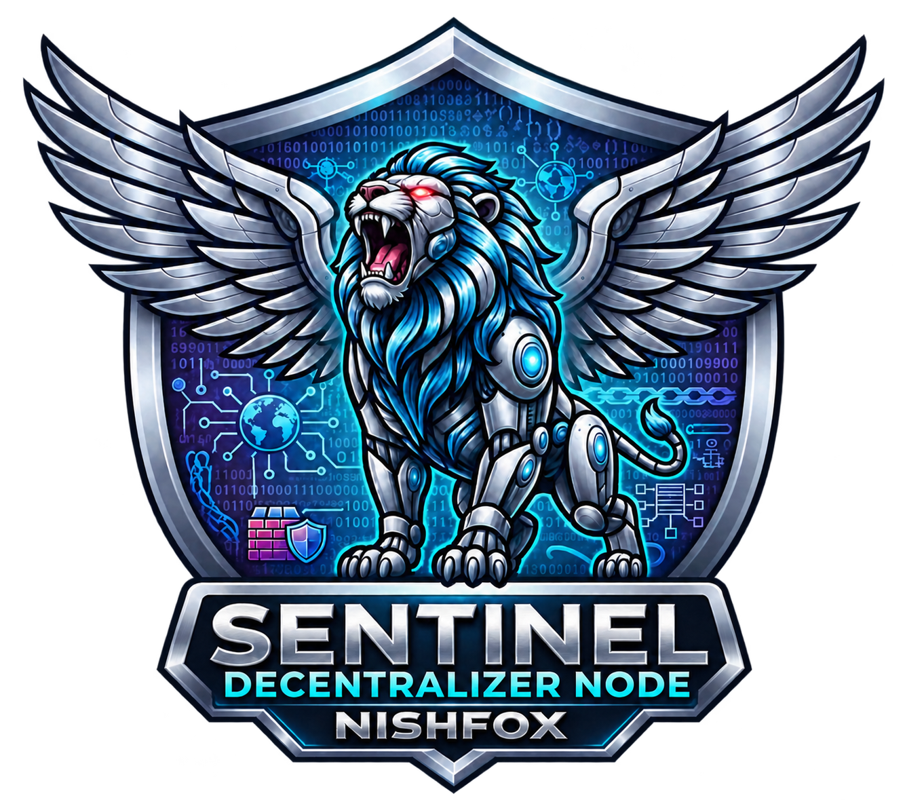

COMMUNITY EDITION
Sentinel Decentralized Node
Host static websites from your Windows PC. Organize files in project folders, control local servers from a dashboard and publish over HTTPS when ready.
The current Windows installer is unsigned.

Watch Sentinel in action
Real dashboard interactions, project setup and HTTPS publishing. Choose your narration language.
Italiano
4K export, about 4 minutes. The initial creation sequence is adapted from the first recording; later scenes were recorded at 4K. Interface labels retain their recorded language. Narration uses synthetic neural voices; music was created for this demonstration.
Features
Multiple sites, separate nodes
Each project has its own folder, local server and Tailscale identity. Check previews, logs and connectivity from the dashboard.
HTTPS publishing
Authorize the dedicated Tailscale node and enable Funnel when you want visitors to reach the site.
Security and backups
HTTP filters, quarantines, integrity checks and ZIP backups. Administrator authentication protects local management.
Optional local AI
Qwen helps interpret evidence and diagnose problems. Autopilot runs periodic checks with limited, logged interventions.
Getting started
- Install Sentinel on Windows using the wizard or launch setup from PowerShell.
- Open Sentinel and add a hosting project.
- Copy your existing website into its folder, start the server and check Preview.
- Complete PC sign-in if requested. Connect and authorize the project's separate node, then select Publish. Approve Funnel in the tailnet console if needed and check the exact HTTPS URL using mobile data.
After component installation, local previews, backups and Qwen inference can run offline. Publishing needs Internet access, Tailscale permissions and the host PC on.
From your PC to a visitor's browser
01 · Organize
Assign each project a folder and copy your team's approved website build.
02 · Verify
Start the local server and check pages, images and logs in Preview.
03 · Publish
Authorize the dedicated node and enable Funnel. Use the HTTPS URL assigned by Tailscale.
A team workflow example
Developers prepare files in a shared repository. The Sentinel administrator exports a backup, copies the approved build into the project folder and checks the result.
Enterprise Edition · In development
A planned proprietary edition for teams. The initial scope covers remote project collaboration, synchronization, revocable permissions, reviewed or direct updates, history and rollback.
Planned extensions include corporate SSO and 2FA, token access, centralized backups, containers, remote terminal, Web Studio, VS Code integration and federation across locations.
Explore the full Enterprise roadmapGuides and resources
Choose from 11 languages using the menu. Static English and Italian documents are available directly. Automatic translations depend on browser language support.
Support development
Community Edition is free and open source. If Sentinel helps you, you can support its development with a voluntary contribution of any amount. A star, useful feedback or sharing the project also makes a difference.
Contributions are optional and do not purchase goods or services.